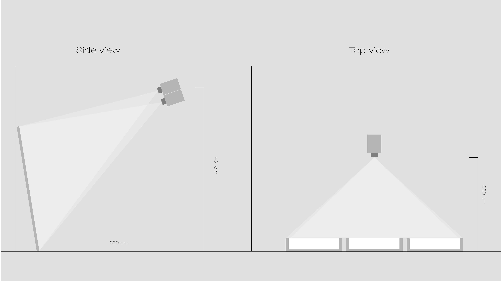
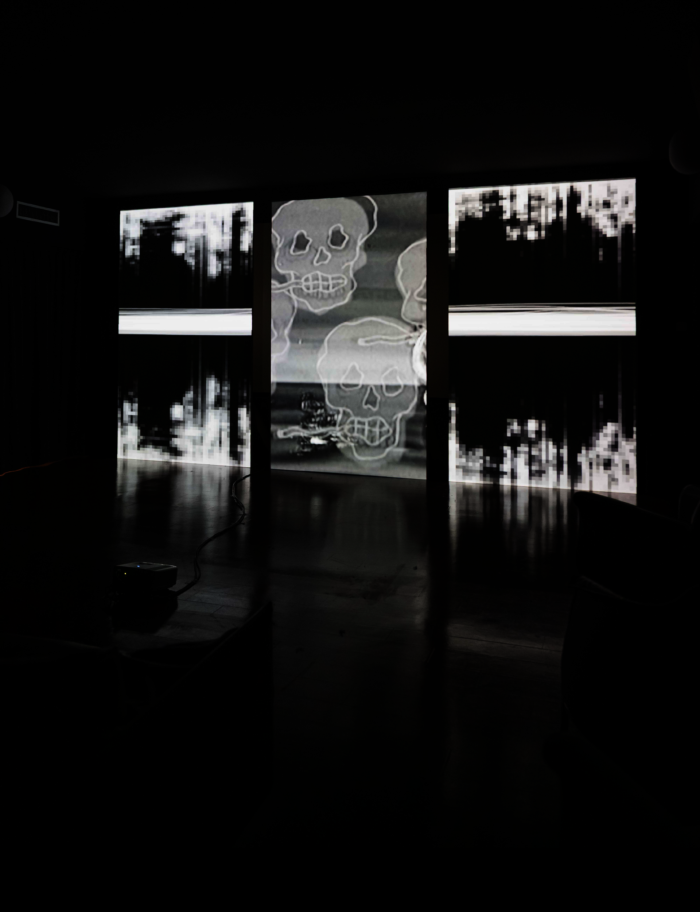

Setup
Technology list:
- 2 Optoma projectors used in stack (Positioning the projectors on top of each other to project the same image but with greater power) with 5000 ANSI lumen power and a projection ratio of 0.5.
- 2 Audio speakers
- 1 Audio mixer
- 1 PC with Resolume Arena installed
Configuration:
- The projectors will be connected to the broadcasting PC with two fibre optic HDMI cables.
- The speakers will be connected to the audio mixer, from which the equalisation can be adjusted, which in turn is connected to the broadcast PC via USB.
Exhibition:
The installation was showcased at Cinema Anteo in Milan during the 2025 PLAI exhibition of the NABA New Technologies Area.


